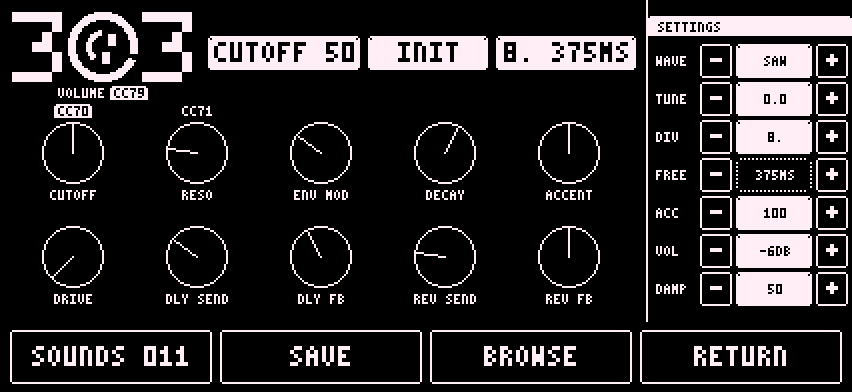

The TB-303 voice is built on Open303. It plays one note at a time.

A note with velocity above a threshold is an accent. A note that starts before the previous note ends is a slide.
Drag a knob to change it. Double tap a knob to return it to its default. Long press a knob to assign a CC. A badge such as CC 71 appears. Long press again to clear it. A ninth assignment says all 8 slots are taken.
DRIVE at its lowest is clean. Turning it up adds drive.
DIV cycles from 16TH to FREE. The FREE row is only live when DIV is FREE.
The top of the screen shows three read-outs: the last control moved, the sound name and the delay time.
Default CC 70 to 77: CUTOFF, RESO, ENV MOD, DECAY, ACCENT, DRIVE, DLY SEND, volume.
[TODO: what WAVE, TUNE, ACC, VOL and DAMP in SETTINGS mean in plain words]